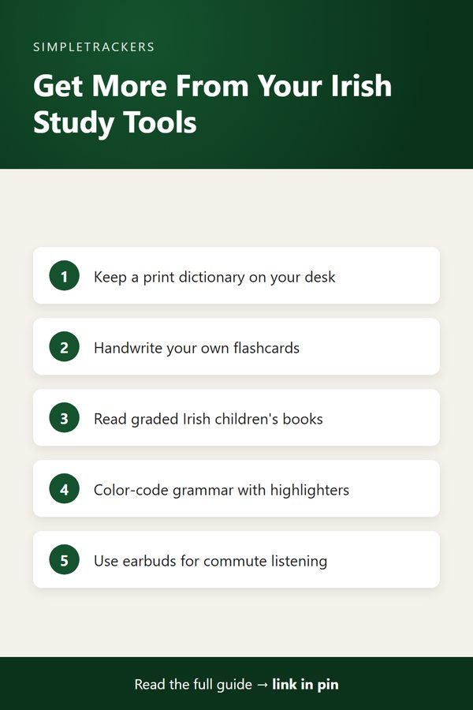

Irish Study Tools Essentials: Materials That Support Real Progress

As an Amazon Associate I earn from qualifying purchases.
Just as tracking your study progress makes learning Irish more intentional, having the right physical and digital tools transforms how efficiently you learn. The materials you use (a quality dictionary, organized flashcards, a dedicated study journal) directly support your ability to absorb and retain vocabulary, master grammar patterns, and build confidence with the language.
This guide explores 14 study essentials that make self-study more productive and more sustainable.
Key takeaways
- Core references: a print dictionary, a self-paced grammar textbook and a phrasebook cover lookup, structure and real conversation.
- Vocabulary tools: pre-made flashcards save time, while handwriting your own cards and keeping a vocabulary journal deepen memory.
- Reading practice: children's books and bilingual readers build fluency with context and quick self-checks.
- Consistency tools: planners, a wall calendar and earbuds help you study regularly and fit listening into daily routines.
| What you need help with | Tools in this guide |
|---|---|
| Looking up and structuring the language | Dictionaries, Teach Yourself Irish, phrasebooks, workbooks |
| Building vocabulary | Pre-made flashcards, blank index cards, vocabulary notebooks |
| Reading and listening | Children's books, bilingual readers, wireless earbuds |
| Staying organized and consistent | Study planners, wall calendar, highlighters, sticky page tabs |
Irish-English Dictionaries
A solid dictionary is the one reference every Irish learner reaches for constantly, whether you're decoding a grammar pattern or checking a word you half-remember from childhood.
Why print beats an app here
Keeping a physical dictionary on your desk removes the temptation to switch to a translation app mid-session, which tends to shortcut the recall practice that actually builds retention.
Browse Irish-English dictionaries on Amazon.
Teach Yourself Irish
A self-paced grammar textbook designed specifically for English speakers gives you a structured foundation in Irish grammar, pronunciation, and basic conversation.
- Logical progression. Rather than jumping between random online resources, a coherent textbook teaches grammar concepts and vocabulary in logical steps.
- Less friction. With a physical book you don't have to hunt for the next lesson; you simply open to the next chapter.
Browse Teach Yourself Irish books on Amazon.
Irish Phrasebooks
A practical phrasebook organized by real-world situations gives you ready-made phrases to use in actual conversations:
- Ordering food
- Asking for directions
- Making introductions
- Handling emergencies
Unlike academic grammar books, a good phrasebook prioritizes the words and sentences you'll genuinely need when speaking with native speakers. This practical focus accelerates conversational confidence. Browse Irish phrasebooks on Amazon.
Irish Language Flashcards
Pre-made flashcard sets eliminate the time spent creating cards and let you jump straight into spaced-repetition vocabulary learning.
- Organized by theme or difficulty. You can focus on mastering one set at a time rather than feeling overwhelmed by the entire vocabulary landscape.
- Physical and portable. Shuffle, sort by difficulty, and carry them anywhere for quick review sessions.
Browse Irish language flashcard sets on Amazon.
Vocabulary Notebooks and Journals
A dedicated vocabulary journal gives you a personal reference for words you're learning, organized by theme, grammar category, or simply by the date you encountered them.
Unlike a loose list, a bound journal encourages you to write out, for each word:
- The word itself and its pronunciation
- Its usage in sentences
- Personal associations
All of these strengthen memory. Flipping back through your notes also shows you how much vocabulary you've accumulated over weeks and months. Browse vocabulary notebooks and journals on Amazon.
Irish Language Children's Books
Graded children's stories use simpler vocabulary and repetitive structures that build confidence and fluency faster than complex adult texts.
- Context clues. Stories help you guess the meaning of unfamiliar words.
- Enjoyment. The narrative structure makes reading feel less like a chore.
- Cultural authenticity. They're how Irish children actually learn to read in their own language.
Browse Irish language children's books on Amazon.
Irish Gaelic Bilingual Readers
Bilingual readers with side-by-side Irish and English text let you check your understanding without constantly reaching for a dictionary.
- Read the Irish side first. Challenge yourself to understand it on its own.
- Verify against the English. Check your understanding against the translation.
- Lean on it less over time. Your need to reference the English side decreases naturally as your comprehension strengthens.
Browse Irish Gaelic bilingual readers on Amazon.

Study Planner and Learning Journals
A dedicated study planner helps you:
- Schedule regular learning sessions.
- Set weekly or monthly vocabulary targets.
- Track your progress toward specific goals, like reaching a certain proficiency level or preparing for conversation practice.
Planning ahead makes it easier to maintain consistency, and reviewing your plan at week's end shows you whether you're on track or need to adjust your routine. Browse study planner journals on Amazon.
Highlighter Sets
Color-coded highlighters let you mark important grammar rules, key vocabulary, or particularly useful phrases in your textbooks and bilingual readers.
| Color | Use it for |
|---|---|
| Green | Vocabulary |
| Yellow | Grammar patterns |
| Pink | Pronunciation notes |
A visual system like this helps your brain process and recall the information faster. Highlighting also keeps you actively engaged while reading rather than passively scanning. Browse highlighter sets on Amazon.
Wireless Earbuds
Quality wireless earbuds make listening practice convenient during daily routines (commuting, exercising, doing chores), so you can accumulate listening hours without carving out dedicated time.
When listening to Irish podcasts, music, or audiobooks is seamless and comfortable, you're more likely to maintain consistent listening practice, which accelerates both comprehension and pronunciation development. Browse wireless earbuds on Amazon.
Blank Index Cards and Flashcard Kits
When you create your own flashcards, handwriting each part forces deeper engagement with each term than simply reading pre-made cards. On each card, write:
- The word
- Its pronunciation
- Its part of speech
- An example sentence
Blank card kits let you build custom decks organized exactly how your brain learns best, and the flexibility to add cards as you encounter new words keeps your deck current with your actual study journey. Browse blank index cards and flashcard kits on Amazon.
Irish Language Workbooks
Workbooks with grammar exercises, fill-in-the-blank drills, and comprehension questions give you structured practice that textbooks alone don't provide.
- Active practice. Actually writing out answers, conjugating verbs and constructing sentences embeds grammar patterns into muscle memory far more effectively than passive reading.
- Spot weak areas. Workbooks let you identify weak areas immediately and focus extra review on those patterns.
Browse Irish language workbooks on Amazon.
Wall Calendar and Study Planner
A large wall calendar dedicated to your Irish study lets you mark study days visually, see your study streak at a glance, and identify patterns in when you study most consistently.
Visual calendars provide motivation: seeing a full month of marked days is powerful psychological reinforcement. You can also use it to:
- Plan special study weeks.
- Note when you'll take practice exams.
- Mark cultural events related to Irish language and culture.
Browse wall calendars and planners on Amazon.
Sticky Page Tabs and Index Flags
Color-coded sticky tabs let you quickly bookmark important pages in your grammar textbook, phrasebook, or reader without damaging the book. Use different colors to mark:
- Grammar rules you need to review
- Tricky conjugations
- Cultural notes
This system means you can navigate directly to the sections you need most instead of flipping through entire chapters, making your study sessions more efficient. Browse sticky page tabs and index flags on Amazon.
Whichever of these you add to your study practice, the value compounds the same way your tracker does—small, consistent additions that make each session a little more productive. Download the Irish Gaelic Self-Study Progress Tracker to keep a record of how these tools change your study patterns.